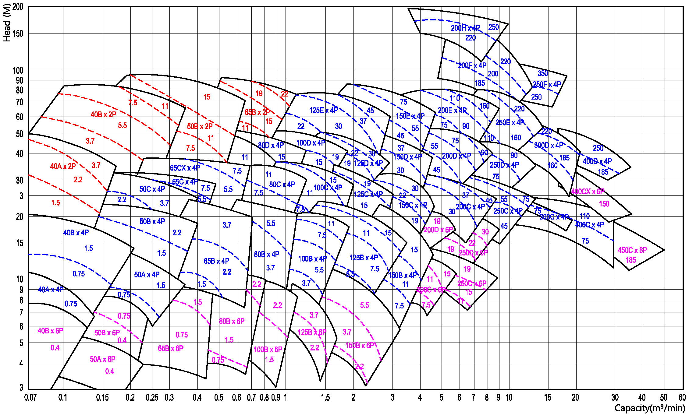

-
운전 테이터 사양
- 사용 유량 : 0.05 m³/min ~ 35 m³/min
- 사용 양정 : 3 m ~ 92 m
- 흡입 구경 : ø40 mm ~ ø400 mm
- 회전 방향 : CW (구동측에서 펌프를 바라보았을 때 우회전)
-
용도 및 적용 분야
- 맑은 액체용 (청수,해수,화학액,기름,알카리액,응축수 등) 광범위한 사용영역의 일반용도 펌핑에 사용
- 일반산업용, 화학공업용, 가정용수공급용, 빌딩용, 급수시설용, 수처리용, 관개용 및 선박용(청수 또는 가열순환용 등)
설계 및 구조적 특성
- 넓은 사용영역에 걸쳐 효율이 높고, 운전이 정숙하며, 고장이 적다
- 펌프 부품의 최대의 호환성
- 라디알 방향 케이싱 분할
- 임펠러 후방 취출 구조
- 플랜지는 흡토출 공히 KS또는 JIS 10㎏/㎠급, FF 이다
- 동평형된 임펠러
- 볼베어링 5300, 6300, 7300계열 등을 사용. 윤활은 그리스 또는 오일배쓰식임
- 무냉각 스터핑 박스, 팩킹링 또는 미케니칼 씨일 사용
- 상하면을 기계 가공한 용접 구조의 강재 베이스 플레이트
- 수력특성 및 주조개선을 위한 정밀 쉘모울드 주조
- 부품의 정밀가공
- 특수액 펌핑용으로 별도의 재질 또는 주조 부품 사용가능
성능 곡선도 (Performance Curve)
